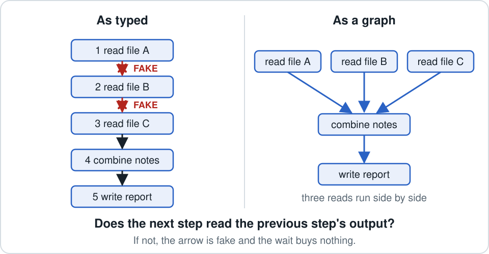
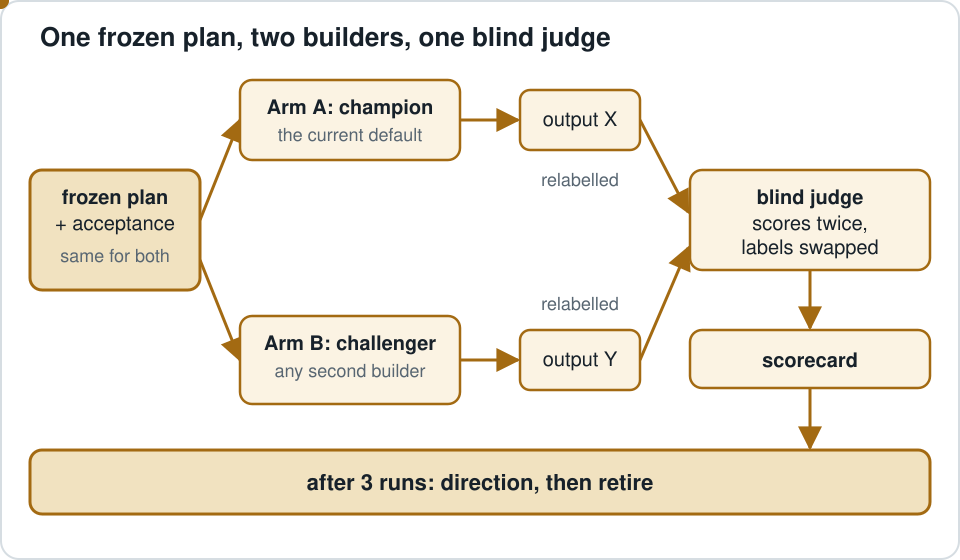

The head chef
/graph
Looks at tonight's order and decides whether to split the chores among helpers. Most nights the answer is "no, one cook is faster", because helpers have to be briefed, and someone has to put their pieces back together.
Split a job only when splitting pays. Test a new way of building before you trust it. Let nothing leave the machine until a person signs for exactly what is leaving.

An agent here is a model session that can read files and run commands. Fan-out means handing pieces of one job to several agents at once; fan-in means merging what they return.
Picture a busy restaurant kitchen. Each skill is one person in it.
Looks at tonight's order and decides whether to split the chores among helpers. Most nights the answer is "no, one cook is faster", because helpers have to be briefed, and someone has to put their pieces back together.
Two cooks bake the same frozen recipe. A taster who cannot see who made which cake scores both. After a few rounds, the winning way of cooking becomes the house method.
A card with checkboxes that survives a shift change, so the next cook picks up where the last one stopped. A manager signs exactly the plate that leaves the kitchen. Change the garnish and the signature no longer counts.
One meal can use all three: the chef plans, the cooks build, the card and the manager release. The rest of this page takes each person in turn, with the real mechanism under each picture.
For how it runs, yes. For what it decides, the better name is:
The house method (the champion) keeps its place until a newcomer (the challenger) beats it on a test both sides agreed to in advance. Then the newcomer becomes the house method. That is the decision /bakeoff makes.
The mechanics are borrowed from language-technology research, where a "bakeoff" is a shared-task contest: every team gets the same data, and a referee scores them on test data the teams never see (the SIGHAN 2003 bakeoff is one example). Donoho calls this setup the Common Task Framework in 50 Years of Data Science.
The pictureBefore handing out chores, the chef asks of each step: does chopping the onions really have to wait for the oven? If not, two helpers can work at once. Then the chef checks that no two helpers need the same cutting board.

Splitting is not free. In a 260-configuration study (arXiv 2512.08296), every multi-agent architecture scored below a single agent on SWE-bench Verified, a benchmark of real GitHub issues: Hybrid 2.1% lower, Centralized 3.1%, Decentralized 5.4%, Independent 14.9%. The same paper finds the effect depends on the task (large gains on decomposable work), so this is one data point, not a law. It is why a fleet has to earn its place.
The second reason is arithmetic. Amdahl's law says the part of a job that cannot be split sets a ceiling on the speedup, however many helpers you add. In the kitchen: plating is one person, no matter how many choppers you hire.

The /graph command's own worked examples: at p = 0.95 with 16 agents, the speedup is 9.1x, not 16x, with a ceiling of 20x. At p = 0.7 with 16 agents it is 2.9x, ceiling 3.3x. Below p = 0.7, /graph says plainly that merging and checking the lanes outweighs the time saved. In the author's log of five build plans, only one cleared that line (p = 0.75); the others ranged from 0.30 to 0.625.
The pictureNobody may edit the recipe once the contest starts. Each cook works at a separate station. The taster sees two unlabelled cakes and a scorecard written before anyone baked. After three contests the house picks its method and the contest closes.

| Measure | Arm A: /graph with Workflow | Arm B: a board-style orchestration tool |
|---|---|---|
| Acceptance checks passed | 6 of 7 | 4 of 7 |
| Blind-verifier defect score (lower is better) | 9 | 25 |
| Frozen safety rules | all 8 pass | 3 fail |
| Live eval | fail | fail |
| Wall clock | 25:21 | 8:57 |
| Lines added | 10,064 | 4,916 |
Read this as one data point, not a verdict. Both arms failed the live eval for the same reason: the shared plan asked for 32,000 output tokens on a call that has to stream, and the test fakes never touched the real API. Run 1 was also smaller than the bakeoff's own size bar, and live steering (Arm B's main selling point) came to a single action. In kitchen terms: the recipe had the wrong oven temperature, so both cakes burned.
The pictureThe card lists every step and ticks each one off, so a new shift reads the card instead of guessing. Before a plate leaves, the kitchen stops and the manager signs that exact plate. The signature works once. A second plate needs a second signature.
A DAG (directed acyclic graph) is a set of steps joined by arrows with no loops. A digest is a short fingerprint computed from file contents: change one byte and the fingerprint changes.

$ python3 dag.py --spec promo/dag.json run ? review awaiting approval: /dag-approve review f94adb dag promo promo/dag.json review gate awaiting-approval no approval yet deploy cmd! waiting on review (awaiting-approval) (! = outside effect: runs once per approval) NEXT ask the person to review deploy.sh, out/index.json, then type: /dag-approve review f94adb exit 2
dag.jsonNodes are commands the runner executes, tasks a person does by hand, and gates a person approves. Each node declares the files it reads, the files it writes, and any other place it writes.dag.py keeps state on disk in a .dag/ folder and reruns only what changed. In a folder with a job, the first command is status, which prints each node's state and one NEXT line./dag-approve at the prompt. The record holds a digest of the reviewed files and of each released effect, so editing either afterwards makes the approval stale.$DAG_EFFECT_KEY, the same for the same content, to pass as an idempotency key wherever the outside system accepts one./dag-approve when the model types it, and refuses the model's writes into .dag folders.| Exit | Meaning | Your move |
|---|---|---|
| 0 | Every node current | verify, report the receipt |
| 1 | A node or the spec failed | Read the log NEXT names, fix, run |
| 2 | Blocked on a task, a gate, or a node that needs a look | Do what NEXT says |
| 3 | Stopped | Tell the person; only they resume |
| 4 | A person-only command was refused | Give the person the slash command it printed |
Five read-only GitHub API censuses, of 900 to 3,074 repositories each, found no project that combines a local runner on the Python standard library, human approval bound to content, and receipts. Most of the borrowed parts came from build tools, durable-execution engines and code review, not from agent frameworks.
status, never a reconstruction.Start at the head chef. Most orders never leave one cook.

One state file per job. Inside one session, /graph's run-state.json is enough. Once a job crosses sessions or ends in an outside effect, its release steps move into a dag.json. Never track the same tasks in both: two stores kept in sync are a hidden edge. One recipe card per order, never two.
| /graph | /bakeoff | /dag | |
|---|---|---|---|
| In the kitchen | The head chef | Two cooks and a blind taster | The recipe card and the manager's signature |
| The question | Should this job be split, how wide, at what cost? | Which way of building should be the default for large builds? | How does a job keep its state and release an effect only on approval? |
| Use it for | Wide, independent, checkable work: research, reviews, audits, per-file changes | Builds of about 15 or more plan tasks, or several hours | Jobs that span sessions, or end in a merge, deploy, publish or send |
| Lasts | One run | Three runs, then it retires | As long as the job exists |
| Rules live in | The spec and its verifiers (caps are still prompt text) | A frozen plan, a frozen acceptance file, a blind verifier | Code: fingerprints, digest-bound approvals, hash-chained receipts |
| Main pro | Warns when p is below 0.7 and prices the run first | Decides on anchors, with a pluggable Arm B | Approval bound to a content digest, spent once |
| Main con | Often answers "don't use me"; budgets are not enforced in code | About 2x build tokens; three runs show direction only | The guard is not a sandbox; ceremony for one-off work |
The installer copies each skill into ~/.claude/skills/<name>/, where Claude Code picks up skills.
git clone https://github.com/wilsonwu-ai/claude-graph-skills && cd claude-graph-skills && ./install.sh
That installs all three. Or just one: ./install.sh graph. Needs Python 3.9+ on macOS or Linux, standard library only.
Setup details, the optional dag-gate mod, and each skill's own notes are in the README.
Run counts and run-1 results come from the author's own logged runs; mechanism claims come from the skill files in the repo. Public sources: